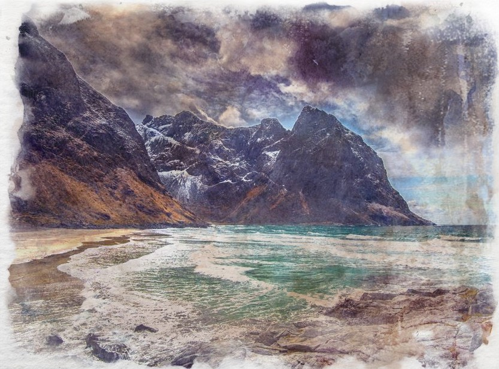
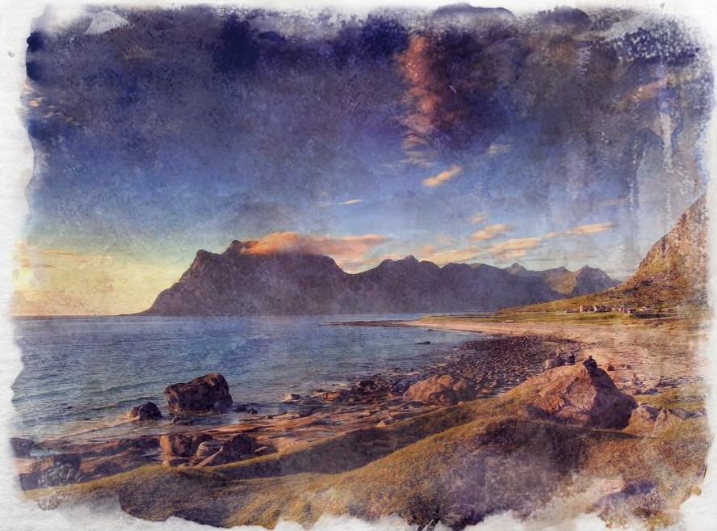
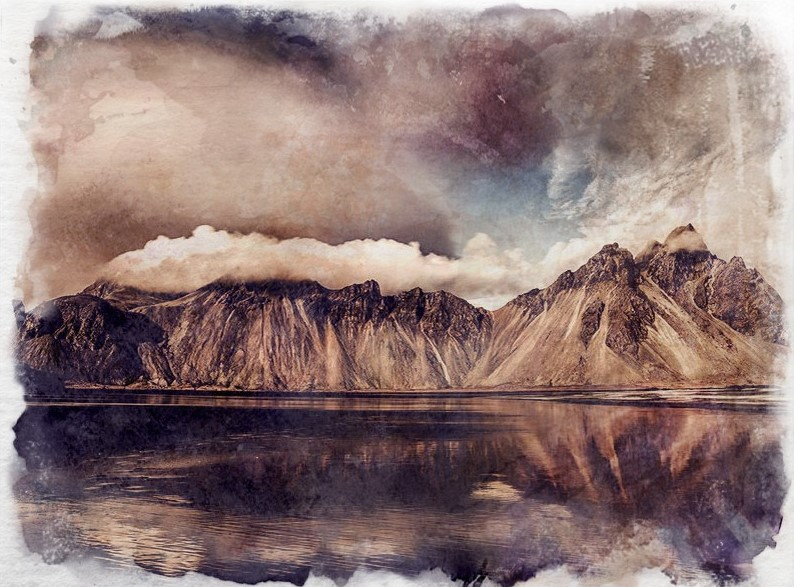
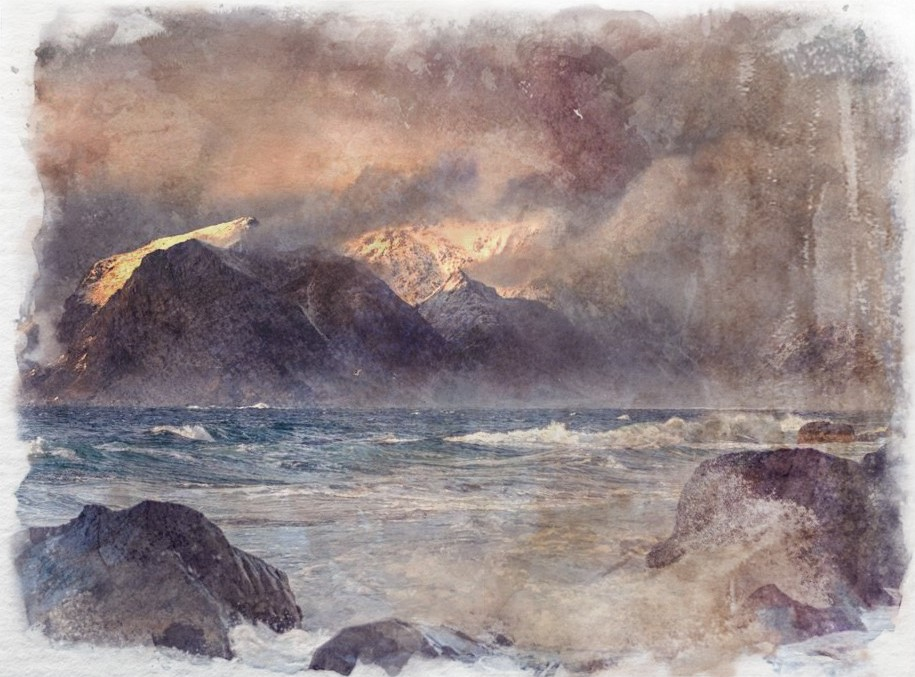
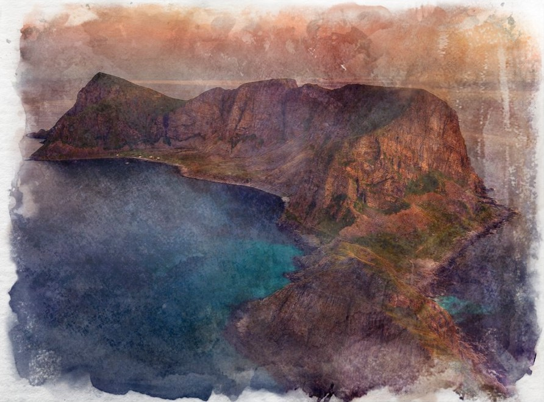
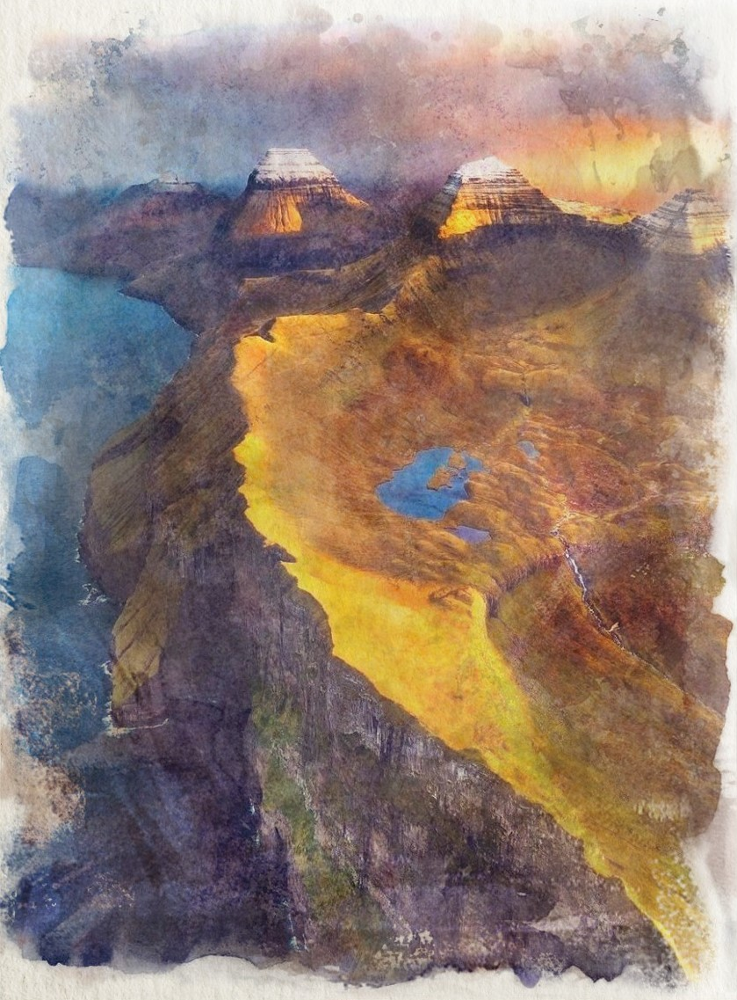
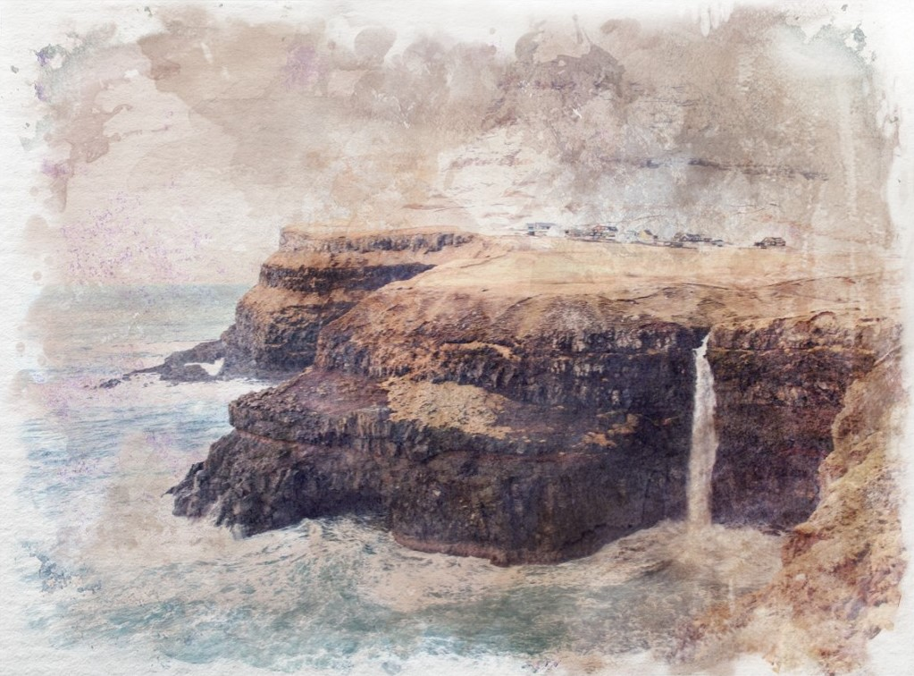
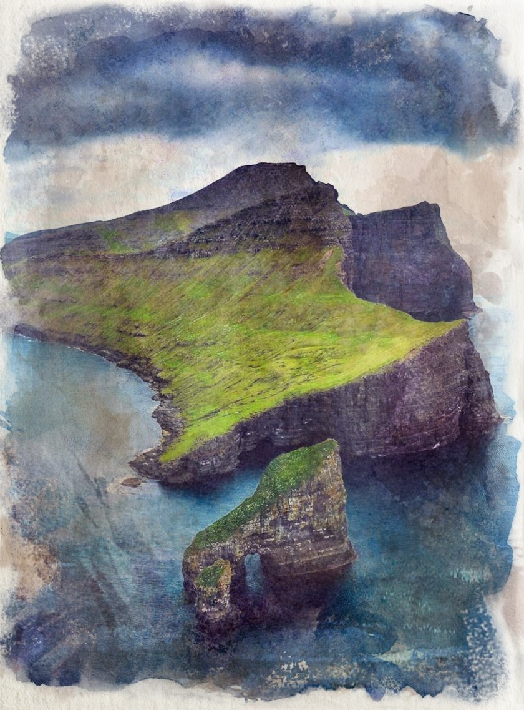
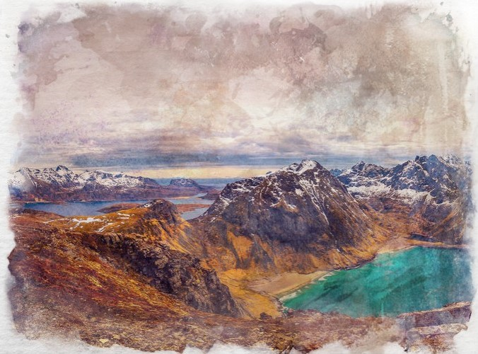

A group of nine islands, five of the Daughters of Ran are the territory of the Sejlki tribes, three belong to the Ikawati rookeries, with the remaining island considered a part of the Kingdom of Valaskjalf, under the jurisdiction of Hÿrrheim.
Bloda

This island belongs to the Kalak tribe.
Dröfn

This island belongs to the Tukkuraak tribe.
Hevring

This island belongs to the Nipaala tribe.
Unnr

Close to the Issfjord, the waters around the island are littered with the graves of ships that got too close whilst attempting to reach the fjord. This island belongs to the Saklaktuk tribe.
Hrönn

This island belongs to the Kukhik tribe.
Dufa

This island is the rookery of the Arnaq.
Himi

This island is the rookery of the Nerri.
Kolga

This island is the rookery of the Taka.
Bylgja

One of the Daughters of Ran, this island is largely home to a bustling trade settlement. Close enough to hold’s capital, Axum, to sail there and back in a day - it is the ideal trading port for the hold given the dangers of sailing too deep into the Maw, with local sailors moving goods to the mainland from there. With a variety of reefs in the region, there is a thriving fishing industry thanks to the Graen Bay kelp nurseries, with shoals of mature fish having left its safety. On its southern coastline, a variety of birds make their home by the many thousands, hunting in the rich waters nearby.